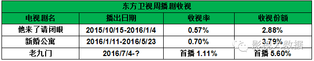
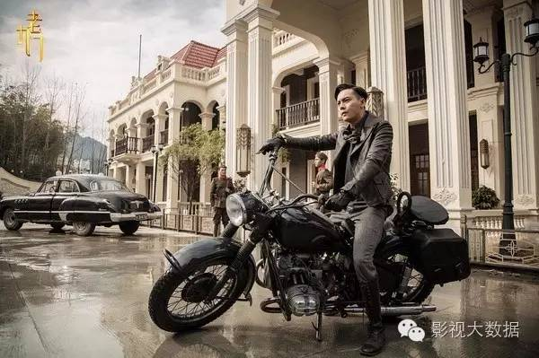

分析|今年暑期谁会红之前哨观察——《老九门》

不过只要网播能制造出足够话题，陈伟霆今年暑期变得更受关注的局面是肯定的。因为该剧在网播剧中制作水准应当还算上乘，至少广大网友普遍认为“好过盗墓笔记”。而你只要稍微看过该剧，不难陈伟霆饰演的角色不但人物有型，而且在该片中几乎“分分钟都在耍帅”→

在耍帅→
在耍帅→
还在耍帅→
无论是军装长靴的造型或是武打动作设计或是台词的“霸总范儿”，都充满了少女们喜欢的荷尔蒙。吐槽的网友固然是有的，但是吃这一套的迷妹恐怕更多，不用怀疑只要这部剧的影响力进一步扩大，陈伟霆一定会吸粉。
然而由于后来作品力度不够，两人CP也拆伙，陈伟霆本人也大概是较为有节操、不太拿个人颇有话题度的感情问题炒作，导致热度下降——
事实上在今年半年内的DataWin的艺人网络指数排行榜（该榜集合了微指数、百度、360指数、贴吧、娱乐论坛、媒体等多个指数加成）里，陈伟霆还没有进入过综合影响力前20名，这种情况和对其感兴趣人群年龄偏高有直接关系，年龄大就没那么多精力鸡血，粉丝不“鸡血”造成的直接后果就是网络号召力不足，热度下降又缺乏好团队或自我经营意识的艺人就难免面临被人认为“要糊”。因此《老九门》兴趣人群年龄层很可能可以弥补陈伟霆粉丝不够热血的问题，让陈伟霆再爆红一次。而如果团队能抓住这次机会好好经营，陈伟霆还有机会。
再加上这个人物本身有秘密、有矛盾、有能力、还有深情厚谊，其实是个相当不错的人设，最重要的是，网民腐女当道，每一部走红剧都少不了所谓的“基情”CP，而目前看来《老九门》的CP已经初现端倪，“二月红”与“张佛爷”的CP肯定会相当受欢迎。而且对张艺兴更有利的是，在“CP党”心中，通常是被认为是“受”的一方更受到粉丝呵护，所以如果说陈伟霆能圈到一些小公主女友粉的话，张艺兴很可能会有不少对他呵护备至的CP粉和“亲妈粉”出现，“二月红”这个角色如果借助好的营销炒CP，一定会帮张艺兴很大的忙。
本着实事求是的态度，分析完好处难免要分析缺点。
张艺兴在本片中最大的挑战恐怕在于他的演技还很青涩，实在有些撑不起角色，这在年轻观众眼里、在以“网剧”为标准要求时应该不会是个大问题，只要角色造型好看、气质文雅就够了，只不过对于张艺兴个人的进一步发展是个大挑战。
因为《极限挑战》综艺两季的热播，张艺兴个人的大众形象其实还是相当不错的，然而他显然不是只想当个综艺咖，而他更正宗的唱跳歌手身份又不能单打独斗，所以张艺兴的演艺生涯最大的突破点还在于演好戏，要演好戏，只满足于网剧标准是绝对不够有前途的。
其实张艺兴演戏也不算是完全的新人了，经过了《从天儿降》、《好先生》，也算是触电了几次，看来在演技天赋上是稍显不足，不过张艺兴一向以“努力家”的形象活跃在粉丝心中，也许努力也可以让演技有所进步。
首先，从百度指数看来，对张艺兴感兴趣的人群，本来年龄构成就和《老九门》的兴趣人群相差不多，都是19岁以下人群占最大部分；性别构成倒是有些差异，《老九门》目前有40%上下的男性观众，而张艺兴的粉丝79%都是女性，然而，众所周知男性观众并非追星主体，而张艺兴在《老九门》中的角色设定也不容易吸引男性粉丝。
所以这可能意味着，即使《老九门》获得成功，张艺兴大约也只是在现有粉丝构成上扩大规模，而不会对粉丝年龄结构有大的改变，虽然好处是，这样的粉丝很热血、很能帮助扩大艺人的网络影响力、造成“爆红”，也能巩固其现有地位；但缺点是，这样的粉丝经济实力较弱，因此无法在高端商业代言上给予大的帮助，同时也会较不稳定，更容易流失、“爬墙”，对艺人的风吹草动情绪性起伏很大，让艺人商业形象的“舆情抗压力”不足。